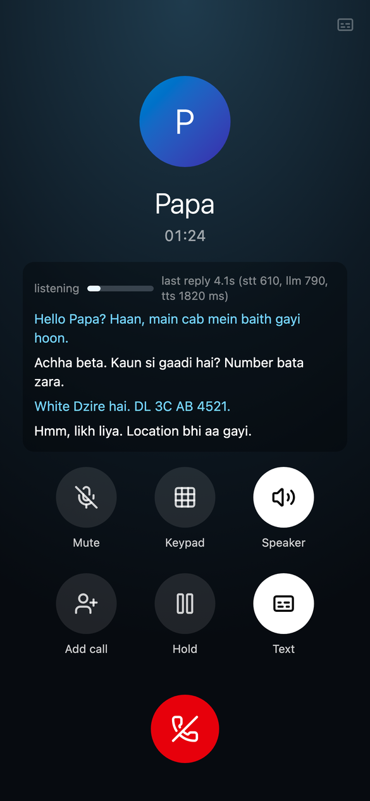
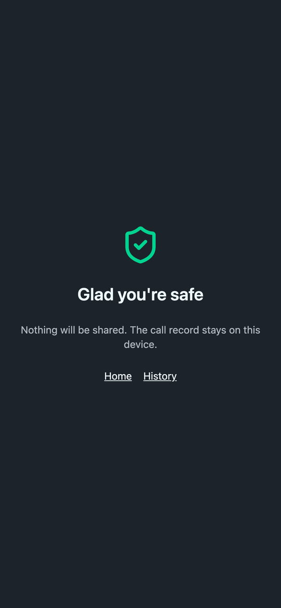

phoney
A pretend phone call that talks back. When she is walking home or riding a cab at night, an AI "Papa" picks up in a natural Indian voice, asks for the cab number, notices her location, and stays quiet when she just wants to scroll.



Real calls, real latency
Her lines are recordings; everything after is the live pipeline (speech-to-text, LLM, voice), and each reply plays after the delay we actually measured, plus 0.5 s for noticing she stopped.
Cab at nightcurrent app
Walking homecurrent app
Cab at night, previous voicebefore
Cab at night, speech-to-speechnot used
Scripted calls
The first voice test: a written script, both sides voiced by Gemini TTS (Sulafat as her, Algenib as dad), mixed like a phone call with cab or street noise and a TV in his room.
Cab at night
Walking home, mostly silent
Code and details: github.com/avijit-thawani/phoney